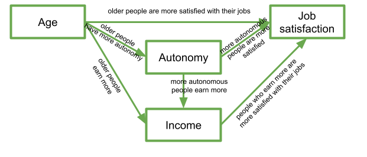

Path Analysis
Information about solutions
Solutions for these exercises are available immediately below each question.
We would like to emphasise that much evidence suggests that testing enhances learning, and we strongly encourage you to make a concerted attempt at answering each question before looking at the solutions. Immediately looking at the solutions and then copying the code into your work will lead to poorer learning.
We would also like to note that there are always many different ways to achieve the same thing in R, and the solutions provided are simply one approach.
Relevant packages
- lavaan
- semPlot or tidySEM
Motivation
So far in DAPR3 it’s been all about the multiple levels. This has brought so many more potential study designs that we can now consider modelling - pretty much any study where we are interested in explaining some outcome variable, and where we have sampled clusters of observations (or clusters of clusters of clusters of … etc.).
But we are still restricted to thinking, similar to how we thought in DAPR2, about one single outcome variable. In fact, if we think about the structure of the fixed effects part of a model (i.e., the bit we’re specifically interested in), then we’re still limited to thinking of the world in terms of “this is my outcome variable, everything else predicts it”.
Thinking about multiple regression in terms of paths
- Imagine writing the names of all your variables on a whiteboard
- Specify which one is your dependent (or “outcome” or “response”) variable.
- Sit back and relax, you’re done!
We can visualise our multiple regression model like this:

Figure 1: In multiple regression, we decide which variable is our outcome variable, and then everything else is done for us
Of course, there are a few other things that are included (an intercept term, the residual error, and the fact that our predictors can be correlated with one another), but the idea remains pretty much the same:

Figure 2: Multiple regression with intercept, error, predictor covariances
But What if I my model of the world doesn’t fit this structure?
Let’s suppose I have 4 variables: Age, Income, Autonomy, and Job Satisfaction. My theoretical understanding of how these things fit together leads me to draw something like this on my whiteboard:Figure 3: A theoretical model of my system of variables
In this diagram, a persons income is influenced by their age and their level of autonomy, and in turn their income predicts their job satisfaction. Job satisfaction is also predicted by a persons age directly, and by their level of autonomy, which is also predicted by age. It’s complicated to look at, but in isolation each bit of this makes theoretical sense. Take each arrow in turn and think about what it represents: 
If we think about trying to fit this “model” with the tools that we have, then we might end up wanting to fit three separate regression models, which between them specify all the different arrows in the diagram:
\[ \begin{align} \textrm{Job Satisfaction} & = \beta_0 + \beta_1(\textrm{Age}) + \beta_2(\textrm{Autonomy}) + \beta_3(\textrm{Income}) + \varepsilon \\ \textrm{Income} & = \beta_0 + \beta_1(\textrm{Age}) + \beta_2(\textrm{Autonomy}) + \varepsilon \\ \textrm{Autonomy} & = \beta_0 + \beta_1(\textrm{Age}) + \varepsilon \\ \end{align} \]
This is all well and good, but what if I want to talk about how well my entire model (Figure 3) fits the data we observed?
Introducing Path Analysis
Mountains cannot be surmounted except by winding paths
By now, we are getting more comfortable with the regression world, and we can see how it is extended to lots of different types of outcome and data structures. By starting to think of our theories by drawing out paths to and from different variables, we open up a whole new way of ‘modelling’ the world around us.
There are a few conventions to help us understand this sort of diagrammatical way of thinking. By using combinations of rectangles, ovals, single- and double-headed arrows, we can draw all sorts of model structures.
In Path Diagrams, we use these shapes and arrows to represent different things in our model:

- Observed variables are represented by squares or rectangles. These are the named variables of interest which exist in our dataset - i.e. the ones which we have measured directly.
- Variances/Covariances are represented by double-headed arrows. In many diagrams these are curved.
- Regressions are shown by single headed arrows (e.g., an arrow from \(x\) to \(y\) for the path \(y~x\)).
- Latent variables are represented by ovals, and we will return to these in a few weeks time!
Terminology refresher
- Exogenous variables are a bit like what we have been describing with words like “independent variable” or “predictor”. In a path diagram, they have no paths coming from other variables in the system, but have paths going to other variables.
- Endogenous variables are more like the “outcome”/“dependent”/“response” variables we are used to. They have some path coming from another variable in the system (and may also - but not necessarily - have paths going out from them).
TODO The logic behind path analysis is to estimate a system of equations that can repdroduce the covariance structure that we see in the data.
Suppose we think that
we collect data on these variables and observed the following correlation matrix:
we can evaluate how well our theoretical model (the system of equations) can reproduce the correlation matrix
this allows us to then compare this theoretical model with one which does NOT have a path from … to ..
There are a few requirements and assumptions that we make in order to have a complete path diagram:
- All our exogenous variables are correlated (unless we specifically assume that their correlation is zero)
- All models are ‘recursive’ (no two-way causal relations, no feedback loops)
- Residuals are uncorrelated with exogenous variables
- Endogenous variables are not connected by correlations (we would use correlations between residuals here, because the residuals are not endogenous)
- All ‘causal’ relations are linear and additive
- ‘causes’ are unitary (if A -> B and A -> C, then it is presumed that this is the same aspect of A resulting in a change in both B and C, and not two distinct aspects of A, which would be better represented by two correlated variables A1 and A2).
Causal??
It is a slippery slope to start using the word ‘cause’, and personally I am not that comfortable using it here. However, you will likely hear it a lot in resources about path analysis and SEM, so it is best to be warned.
Please keep in mind that we are using a very broad definition of ‘causal’, simply to reflect the one way nature of the relationship we are modeling. In Figure 4, a change in the variable X1 is associated with a change in Y, but not vice versa.

Figure 4: Paths are still just regressions.
Thanks to Sewal Wright, we can express the correlation between any two variables in the system as the sum of all compound paths between the two variables.
compound paths are any paths you can trace between A and B for which there are:
- no loops
- no going forward then backward
- maximum of one curved arrow per path
Let’s consider the example below, for which the paths are all labelled with lower case letters \(a, b, c, \text{and } d\).

Figure 5: A multiple regression model as a path diagram
According to Wright’s tracing rules above, write out the equations corresponding to the 3 correlations between our observed variables (remember that \(r_{a,b} = r_{b,a}\), so it doesn’t matter at which variable we start the paths).
- \(r_{x1,x2} = c\)
- \(r_{x1,y} = a + bc\)
- \(r_{x2,y} = b + ac\)
Now let’s suppose we observed the following correlation matrix:
## x1 x2 y
## x1 1.00 0.36 0.75
## x2 0.36 1.00 0.60
## y 0.75 0.60 1.00We can plug these into our system of equations:
- \(r_{x1,x2} = c = 0.36\)
- \(r_{x1,y} = a + bc = 0.75\)
- \(r_{x2,y} = b + ac = 0.60\)
And with some substituting and rearranging, we can work out the values of \(a\), \(b\) and \(c\).
This is what I get:
a = 0.61
b = 0.38
c = 0.36
We can even work out what the path labeled \(d\) (the residual variance) is. First we sum up all the equations for the paths from Y to Y itself. These are:
- \(a^2\) (from Y to X1 and back)
- \(b^2\) (from Y to X2 and back)
- \(acb\) (from Y to X1 to X2 to Y)
- \(bca\) (from Y to X2 to X1 to Y)
Summing them all up and solving gives us:
\[
\begin{align}
r_{y \cdot x1, x2} & = a^2 + b^2 + acb + bca\\
& = 0.61^2 + 0.38^2 + 2 \times(0.61 \times 0.38 \times 0.36)\\
& = 0.68 \\
\end{align}
\]
We can think of this as the portion of the correlation of Y with itself that occurs via the predictors. Put another way, this is the amount of variance in Y explained jointly by X1 and X2, which sounds an awful lot like an \(R^2\)!
The path labelled \(d\) is simply all that is left in Y after taking out the variance explained by X1 and X2, meaning that the path \(d = \sqrt{1-R^2}\).
Hooray! We’ve just worked out regression coefficients when all we had was the correlation matrix of the variables! It’s important to note that we have been using the correlation matrix, so, somewhat unsurprisingly, our estimates are standardised coefficients.
Because we have the data itself, let’s quickly find them with lm()
# quickly scale all the columns in the data
egdat <- egdat %>% mutate_all(~scale(.)[,1])
# extract the coefs
coef(lm(y~x1+x2, egdat)) %>% round()## (Intercept) x1 x2
## 0 1 0## [1] 0.688
Doing Path Analysis
lavaan
model <- “….”
modelfit <- sem(model)
summary(modelfit)
What is “model fit”?
no longer “variance explained in y”
disparity between observed and predicted covariance matrix.